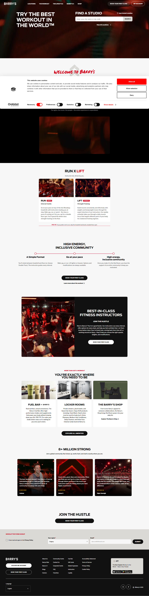
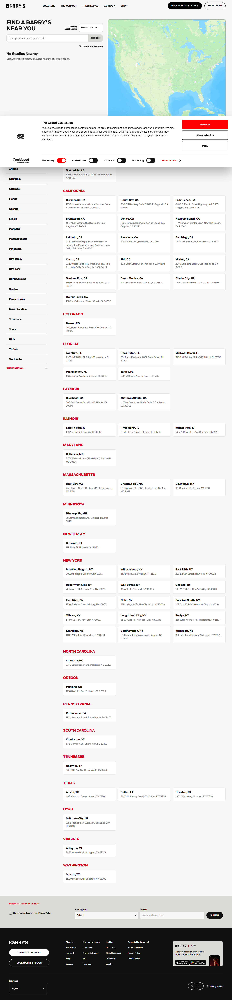
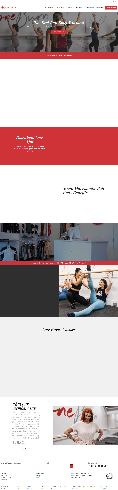
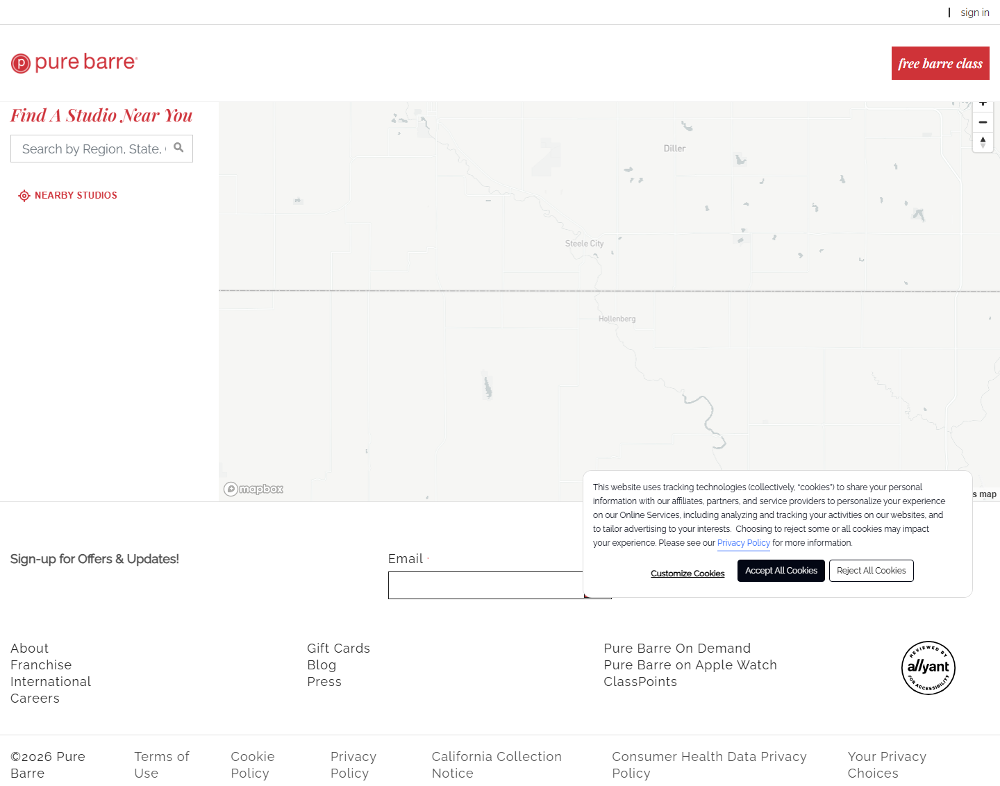

"Strength meets stillness"
Live screenshots and analysis captured via Playwright browser automation. Both competitors were visited, screenshotted, and analyzed for hero messaging, CTAs, color language, and Austin market presence.




Our Playwright research confirmed: Barry's has zero Austin locations. Pure Barre's local search experience is broken with a cookie consent wall. Orangetheory focuses purely on cardio metrics. No competitor offers the HIIT + recovery pairing. Here's exactly what the market is missing:
Every competitor owns one lane. Barry's owns intensity. Pure Barre owns low-impact grace. Orangetheory owns heart-rate data. Pulse & Flow owns the complete cycle — and no one else in Austin can claim that.
"The best workout in the world"
Aspirational intensity, premium exclusivity, celebrity brand halo. Appeals to hardcore fitness enthusiasts willing to pay a premium for bragging rights. Not in Austin.
"Small movements, full body benefits"
Graceful, low-impact, community-first. Appeals primarily to women who want to tone without high-impact stress. Strong franchise network. Missing the cardio/strength crowd.
"More Life"
Data-driven cardio with heart-rate zones. Strong tech angle (wearable integration). Cardio-heavy, minimal strength work, zero recovery offering. Feels clinical.
"Strength meets stillness"
The only Austin studio that treats recovery as part of the workout, not an afterthought. Every class is complete — push hard, then restore fully. Appeals to high-achievers who want results without burnout.
"Pulse & Flow is the only studio in Austin that pairs every HIIT class with a guided yoga recovery session — because the best results come from training hard and recovering smarter. Built for Austin professionals who refuse to choose between performance and longevity."
One post per platform per day. Instagram focuses on visual storytelling and community; LinkedIn targets Austin professionals and B2B outreach. Each post includes topic, angle, and suggested visual.
| Day | Instagram Post | LinkedIn Post |
|---|---|---|
| MondayDay 1 |
Instagram Studio Reveal — "Two worlds, one studio" Split-screen concept: left side high-energy HIIT, right side serene yoga. First public post announcing Pulse & Flow. 📸 Split diptych photo: HIIT action left / yoga pose right |
LinkedIn Founder Story — "Why I built the studio Austin was missing" Personal narrative about the gap between intense training and recovery. Address the professional burnout angle. 📸 Founder photo in studio — authentic, not stock |
| TuesdayDay 2 |
Instagram What Makes Us Different — Infographic Simple visual showing the difference: competitors offer A or B, Pulse & Flow offers A + B in every class. 📊 Side-by-side comparison graphic (branded colors) |
LinkedIn The Recovery Problem — Industry Insight "The wellness industry has a recovery problem. Austin professionals are paying for half a solution." Data-backed. 📊 Stat graphic: % of gym-goers with overtraining injuries |
| WednesdayDay 3 |
Instagram Class Preview Reel — Behind the scenes 30-second reel showing a real class: HIIT segment transitions to yoga recovery. Trending audio. 🎬 Short reel: class footage with fast cuts, energy → calm transition |
LinkedIn What Professionals Get Wrong About Fitness Article-style post: more training ≠ better results. Recovery is the missing variable for high performers. 📸 Professional at desk looking tired → then energized at studio |
| ThursdayDay 4 |
Instagram Meet Your Instructor Series — #1 Introduce lead HIIT instructor. Personal story, credentials, what they love about the Pulse & Flow method. 📸 Action shot mid-class, warm lighting, energetic |
LinkedIn Team Spotlight — Instructor Expertise Highlight instructor certifications, philosophy, and how their background shapes the method. Builds credibility. 📸 Professional headshot + credentials graphic |
| FridayDay 5 |
Instagram TGIF Challenge — "Can you commit to both?" Weekend engagement post: "Can you commit to 45 min of full effort + 20 min of full restoration this weekend? Drop a 🔥 if you're in." 📸 Bold typography card on branded green background |
LinkedIn The Most Productive Thing You Can Do This Weekend Reframe rest and recovery as performance strategy. Links physical recovery to cognitive performance for leaders. 📊 Infographic: Sleep + recovery = executive performance |
| SaturdayDay 6 |
Instagram Austin Love — "We built this for our city" Local love post: Austin skyline, neighborhood references, "This city moves fast. We built a studio that helps you keep up — and recover." 📸 Studio exterior or interior with Austin vibes (plants, light, texture) |
LinkedIn Why We Chose Austin for Our First Studio Market analysis angle: Austin's tech/startup workforce, health consciousness, gap in recovery-paired fitness. Business case. 📊 Austin wellness market growth stats |
| SundayDay 7 |
Instagram Sunday Stillness — "Rest is not a reward" Mindset shift post: recovery as discipline, not laziness. Sets up the brand philosophy beautifully. 📸 Peaceful yoga aesthetic: natural light, calm pose, plants |
LinkedIn The Science Behind HIIT + Yoga Recovery Thought leadership: cortisol reduction, nervous system regulation, muscle protein synthesis. Cite research. 📊 Research-backed infographic: what happens physiologically |
| Day | Instagram Post | LinkedIn Post |
|---|---|---|
| MondayDay 8 |
Instagram Recovery Science — "Your muscles don't grow in the gym" Myth-buster: growth happens during rest. Simple visual showing the stress-recovery-adaptation cycle. 📊 Diagram: Train → Recover → Adapt (branded graphic) |
LinkedIn 3 Reasons HIIT Without Recovery Leaves Results on the Table Long-form post with scientific backing. Positions Pulse & Flow as the informed choice for serious professionals. 📊 Numbered list graphic with research citations |
| TuesdayDay 9 |
Instagram Class Format Explainer — Timeline carousel Swipeable carousel: Slide 1: HIIT (0–45 min) → Slide 2: Transition → Slide 3: Yoga Recovery (45–65 min) → Slide 4: What you feel after. 📊 5-slide carousel with timeline visual per slide |
LinkedIn How We Designed a 65-Minute Class That Outperforms 90-Minute Workouts Operational excellence angle: intentional design, evidence-based sequencing, respecting professionals' time. 📸 Studio view from above showing the full space |
| WednesdayDay 10 |
Instagram Myth Bust — "Yoga is not just stretching" Bold, opinionated typography post. Call out the misconception directly. Builds brand voice credibility. 📸 Bold text card: "Yoga is not stretching. Change our mind." on dark green |
LinkedIn Why Corporate Wellness Programs Are Getting Recovery Wrong B2B angle: most corporate programs offer yoga OR gym access, never both paired. Pulse & Flow's model as the solution. 📊 Corporate wellness stats: productivity/absenteeism correlation |
| ThursdayDay 11 |
Instagram Beta Member Story — First transformation Share (with permission) a beta member's experience. Focus on how they feel, not just physical results. Emotional hook. 📸 Member photo in class, candid and authentic |
LinkedIn What Training for Strength AND Recovery Taught Me About Running a Business Founder analogy: rest between sprints = strategy pauses in business. Push and restore applies to leadership too. 📸 Founder photo in studio — professional and approachable |
| FridayDay 12 |
Instagram Studio Tour — Equipment spotlight Show what makes the studio special: the HIIT equipment and the recovery space. Visual contrast of both environments. 🎬 Short reel or carousel: studio tour walking through both areas |
LinkedIn We Invested Heavily in Recovery Equipment — Here's Why Transparency post: where the budget went and the philosophy behind prioritizing recovery infrastructure. 📸 Recovery space photo: mats, props, warm lighting |
| SaturdayDay 13 |
Instagram Community Spotlight — Member #1 Feature First member feature. Ask them: "What were you missing before Pulse & Flow?" Real words, real face. 📸 Member quote card with their photo — warm, joyful |
LinkedIn Building Austin's Most Intentional Fitness Community Thoughtful post on community design: who you attract shapes who stays. The dual audience of HIIT + yoga people. 📸 Group class photo — diverse, engaged, community vibe |
| SundayDay 14 |
Instagram Weekly Reflection Prompt — "What did you restore this week?" Sunday engagement: "Name one thing you did for recovery this week 👇" Comment bait, builds community dialogue. 📸 Flatlay: journal + matcha + yoga mat on warm wood |
LinkedIn 7 Things We Learned in Our First Two Weeks Open Transparent founder reflection. Members loved X, we're adjusting Y, we're doubling down on Z. Builds trust. 📊 Numbered list graphic — clean, readable |
| Day | Instagram Post | LinkedIn Post |
|---|---|---|
| MondayDay 15 |
Instagram Week 3 Motivation — "Still showing up" Consistency content. Celebrate members who've made it 3 weeks. Normalize showing up imperfectly. 📸 Class photo — candid energy, community feel |
LinkedIn Early Results: What Our First Members Are Saying Compile 3-4 direct quotes from early members. Anonymous OK. Focus on energy, recovery, how they feel. 📊 Quote compilation graphic — clean testimonial cards |
| TuesdayDay 16 |
Instagram Results Post — "What 3 weeks of push + restore does" Member sharing their 3-week check-in. Not about weight — about energy levels, sleep quality, mental clarity. 📸 Member action shot + text overlay with their 3-week reflection |
LinkedIn Case Study: Austin Professional, 6 Weeks In Mini case study format: background, challenge, approach, result. Anonymous or named. Resonates with LinkedIn audience. 📊 Case study layout with before/after stats (non-weight metrics) |
| WednesdayDay 17 |
Instagram Austin Spotlight — "Why we chose this neighborhood" Local love. Share the story of why this Austin neighborhood/location. Name local businesses nearby, coffee shops, trail, etc. 📸 Studio exterior + Austin street context — local and real |
LinkedIn The Austin Fitness Market Gap We're Filling Market opportunity framing. Austin's population growth, tech workforce expansion, demand for premium wellness. 📊 Austin market stats: population, median income, wellness spend |
| ThursdayDay 18 |
Instagram FAQ Carousel — "Top 5 questions answered" Address real objections: "Is it for beginners?" "Can I just do one half?" "What if I hate yoga?" Honest, warm answers. 📊 5-slide FAQ carousel — each slide one Q&A, branded |
LinkedIn The Questions We Get Most (And Our Honest Answers) Same FAQ content, but expanded for LinkedIn with more nuance. Include the "Is this for men?" question directly. 📊 List-style post with Q&A headers |
| FridayDay 19 |
Instagram Friday Flow — "Celebrate your week with restoration" Position Friday evening yoga recovery as the perfect cap to a hard work week. "Your nervous system called — it's asking for Friday Flow." 🎬 Short reel: Friday evening class vibes, warm lighting, calm |
LinkedIn The Fitness Habit Changing How Austin Professionals Recover Narrative piece linking physical recovery to workplace performance. Reference specific Austin industries (tech, finance, healthcare). 📸 Professional in Pulse & Flow class — relatable, not gym-bro |
| SaturdayDay 20 |
Instagram Local Partner Feature — Austin brand collab Feature a local Austin wellness/food/coffee brand. Mutual shoutout, cross-pollinate audiences. Keep it authentic. 📸 Co-branded photo: Pulse & Flow + partner brand products/space |
LinkedIn Partnership Announcement — Local Austin Collaboration Professional framing of the same partner relationship. Focus on shared values and community building. 📊 Partnership announcement graphic — both logos, clean layout |
| SundayDay 21 |
Instagram Gratitude Post — "To everyone who showed up in Week 3" Community appreciation. Name members (if they consent), celebrate consistency milestones, build belonging. 📸 Class group photo — candid, joyful, community |
LinkedIn Community Milestone: What 3 Weeks of Building Has Taught Us Reflective founder post. Numbers, surprises, what changed, what stayed. Humanizes the brand for LinkedIn. 📸 Founder candid photo in studio — thoughtful, real |
| Day | Instagram Post | LinkedIn Post |
|---|---|---|
| MondayDay 22 |
Instagram Month 1 Milestone — By-the-numbers One month infographic: members served, classes run, approximate "recovery hours" delivered. Build momentum visually. 📊 By-the-numbers graphic: X members, X classes, X hours of recovery |
LinkedIn 30 Days In — What We've Learned, Changed, and Doubled Down On Honest founder reflection. Shows self-awareness, iteration, and genuine commitment to the community. 📸 Founder photo at front desk — grounded, confident |
| TuesdayDay 23 |
Instagram Founding Member Offer — Last chance pricing Direct: "Founding Member pricing closes [date]. Lock in the best rate we'll ever offer. Link in bio." Simple, urgent, clear. 📸 Bold CTA card: price + deadline + benefit, coral on green |
LinkedIn Corporate Wellness Partnership — Founding Company Rates B2B offer: "We're offering founding-company pricing for Austin businesses that book team wellness packages this month." 📊 Corporate offer card: team sizes, pricing tiers, contact CTA |
| WednesdayDay 24 |
Instagram Social Proof Wall — Member quote carousel Compile the best quotes from Weeks 1-3. Let members sell for you. 6-8 quotes in a swipeable carousel. 📊 Quote carousel: one member quote per slide, consistent format |
LinkedIn What Austin Professionals Are Saying After 30 Days Same testimonials, reframed for a professional audience. Focus on productivity, focus, stress management outcomes. 📊 3-quote compilation with professional context added |
| ThursdayDay 25 |
Instagram 48-Hour Countdown — Urgency post "48 hours left on founding member pricing. After [date], rates go up permanently. Here's everything you get:" List the value. 📸 Countdown aesthetic: clean timer graphic + full value list |
LinkedIn Still on the Fence? Here's a Full Breakdown Remove objections directly: what's included at each membership tier, what makes it different, is it worth it. 📊 Comparison table: what you get at each tier |
| FridayDay 26 |
Instagram Last Call — Founding Member closes today Final CTA. Warm, not pushy: "If Pulse & Flow has been on your mind — today's the day. Link in bio." 📸 Studio photo — inviting, warm, "this could be yours" |
LinkedIn Final Call: B2B Partnership Applications Close Today Direct outreach for corporate partners. List 3 benefits of team wellness investment. DM or contact link. 📸 Team class photo — professional group in studio |
| SaturdayDay 27 |
Instagram New Member Welcome Weekend — Event announcement Announce a Welcome Weekend open house for new founding members. Free class, meet the instructors, studio tour. 📸 Event graphic: date, time, what to expect — warm and welcoming |
LinkedIn Open House Event — Austin Wellness Community Welcome Professional event invitation. Include agenda, who should attend (tech teams, HR leaders, wellness champions). 📊 Event invite graphic — professional, branded, clear logistics |
| SundayDay 28 |
Instagram Month 2 Teaser — "We're just getting started" Preview what's coming: new class formats, guest instructors, partnerships. Build anticipation for the next chapter. 📸 Teaser/mystery aesthetic: blurred studio shot + "Coming Month 2" |
LinkedIn Month 2 Roadmap: What's Next at Pulse & Flow Transparent roadmap post: new offerings, community events, potential corporate program launch. Signals growth. 📊 Roadmap timeline graphic — Month 2 milestones |
Based on what Barry's and Pure Barre do well — and what they miss — these are the seven highest-impact changes for the Pulse & Flow website.
Your hero section must immediately communicate HIIT + Yoga Recovery in every class. Don't make visitors scroll to understand what you do. Use a split visual (intensity left / stillness right) with your tagline "Strength meets stillness" and a clear sub-headline: "The only Austin studio that pairs every HIIT class with yoga recovery."
Pure Barre's strongest move is their "free barre class" CTA — it's everywhere. Pulse & Flow should match this with a "Try Your First Class Free" button as the #1 call-to-action, before any paid membership pitch. Lower the barrier to entry as much as possible.
Use a looping, muted background video showing the transition from HIIT to yoga — literally embodying "strength meets stillness" in motion. This visually explains your concept in 5 seconds better than any copy. Barry's uses dark static imagery; you can outperform them with movement.
Neither Barry's nor Pure Barre explains why their method works. Add a section with 3 scientific facts about pairing HIIT with yoga recovery: cortisol reduction, muscle protein synthesis, nervous system regulation. Cite accessible studies. This builds enormous credibility for your educated professional audience.
Both competitors either hide pricing or require a click-through to find it. Austin professionals hate friction and hidden costs. Show simple, clear membership tiers directly on the homepage — even just 2-3 options (Drop-in / Monthly / Founding Member) builds trust and reduces abandonment.
Barry's shows "8+ Million Strong" — impressive, but generic. Pulse & Flow should feature Austin members by name and neighborhood: "Maria, East Austin startup founder" or "Derek, Dell engineer, South Congress area." Local specificity builds connection and trust that no national brand can replicate.
Show exactly what happens in a Pulse & Flow class: a visual timeline (0–45 min HIIT → 45–65 min Yoga Recovery). This removes the #1 objection: "I don't know what to expect." It also communicates time-efficiency, which matters hugely to your professional audience.
All five strategies are organic-first, free or low-cost, and specifically designed for Austin. Barry's, Pure Barre, and Orangetheory don't do any of these at a local level.
Target Austin's tech companies directly: Tesla, Dell, Apple, Oracle, Indeed, Indeed, Bumble, SpaceX all have Austin offices with large professional workforces. Pitch a "Team Wellness Package" — company buys class packs for employees at a 20% group discount. One HR manager saying yes = 10-30 new members.
✓ Competitors have zero B2B strategy at the local studio levelAustin has a massive running culture: Austin Runners Club, RunATX, Lone Star Running, Fleet Feet Austin run groups. Offer free or discounted "Post-Long-Run Recovery Sessions" to running club members. Runners desperately need yoga recovery but rarely seek it out. You go to them.
✓ Competitors don't target runners — a huge, fitness-motivated Austin audienceLaunch a structured 30-day challenge pairing daily workout moves (HIIT) with recovery practices (yoga). Daily content, branded hashtag #PulseAndFlowChallenge, partner with 3-5 Austin micro-influencers (5k–50k followers) for co-creation. Participants share their journey — you get UGC and reach.
✓ Competitors only market the workout — never the recovery ritual as a social challengeBook yourself into Austin startup and tech company lunch breaks. Offer a free 25-minute "Desk Decompression" session: 10 min HIIT circuit + 15 min guided yoga recovery. Bring mats. Leave founding member discount cards. Target companies via LinkedIn outreach to Office Managers, HR Directors, and People Ops leads.
✓ Zero competitors are doing in-person workplace demos — you own this channel entirelySponsor hyper-local Austin content: Austin Chronicle newsletters, Austin Inno, Keep Austin Weird podcast, local wellness creators. A 30-day sponsorship of one strong local newsletter can cost $200-600 and reach thousands of your exact target audience — Austin professionals who read local media. Far more efficient than Facebook ads.
✓ Competitors rely on national paid social — local content sponsorship is wide openZero budget. Maximum immediate impact. Each of these can be completed in under 3 hours and will start driving results before the week is out.
Create a simple page (Linktree, Carrd.co, or Squarespace — all free tiers available) with your founding member pricing, 3 beta tester quotes, a short video or photo of the studio, and a Google Form or Calendly link to book a free first class. Update your Instagram bio link. One afternoon of work.
⏱ 2-3 hours · $0 costUsing only your phone: (1) Studio empty — the space, the vibe; (2) Quick HIIT 30-second circuit; (3) One yoga recovery pose with calming music; (4) You on camera — 30-second "why I built this"; (5) Austin B-roll with text overlay: "Austin's only HIIT + yoga recovery studio." Use trending audio. Post one per day Mon–Fri.
⏱ 3-4 hours total · $0 costThis is your #1 driver of local search traffic. Set up Google Business Profile today with 10+ photos, keyword-rich description ("HIIT yoga Austin," "fitness studio Austin TX," "yoga recovery Austin"), accurate hours, and your website link. Then text 5 friends and ask for 5-star reviews this week. Competitors have no Austin presence — own local search now.
⏱ 1-2 hours · $0 cost💡 Combined impact this week: A live booking page + 5 reels in the feed + a Google Business Profile with reviews = the foundation of a complete local marketing presence. You'll have a link to send people, content showing what you do, and search visibility — all before the end of the week. Cost: $0.